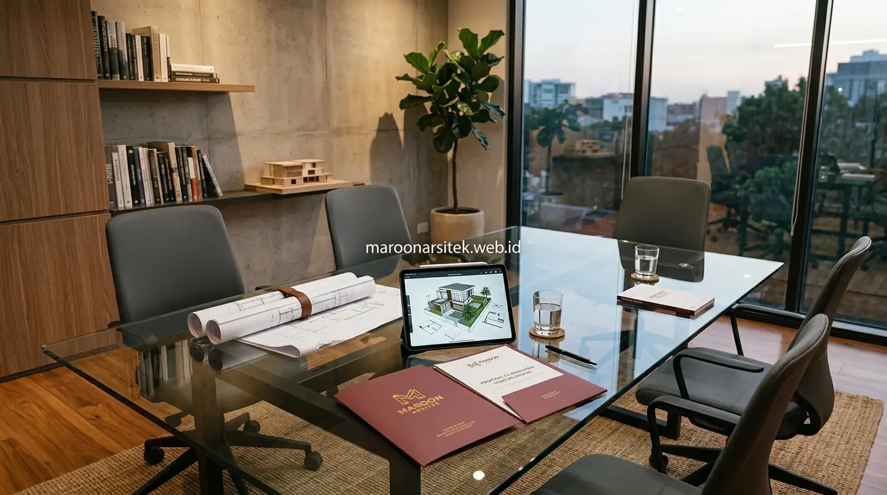

Biaya jasa arsitek rumah di Indonesia umumnya dihitung berdasarkan skema tertentu, seperti persentase dari total nilai konstruksi atau tarif per meter persegi luas bangunan, dengan besaran yang dipengaruhi kompleksitas desain dan cakupan layanan yang diberikan. Maroon Arsitek menjelaskan skema perhitungan ini secara transparan agar calon klien memiliki gambaran sebelum memutuskan berkonsultasi lebih lanjut.
Keraguan menghubungi arsitek sering muncul karena tidak adanya patokan tarif yang jelas di awal, sehingga calon klien khawatir biaya yang dikenakan tidak sebanding dengan manfaat yang diperoleh. Bagian berikut menguraikan skema perhitungan biaya jasa arsitek beserta faktor yang memengaruhi besarannya.
Skema Perhitungan Biaya Berdasarkan Persentase Nilai Konstruksi
Skema persentase dari total nilai konstruksi merupakan salah satu metode umum dalam menghitung biaya jasa arsitek, di mana besaran persentase disesuaikan dengan cakupan layanan, mulai dari desain awal hingga pengawasan pelaksanaan konstruksi. Skema ini umum digunakan terutama untuk proyek dengan skala menengah hingga besar.
Cakupan layanan yang lebih lengkap, termasuk pengawasan berkala selama konstruksi berlangsung, umumnya dikenakan persentase yang lebih tinggi dibanding layanan yang hanya mencakup penyusunan gambar kerja tanpa pendampingan pada tahap pelaksanaan.
Skema ini memberikan keuntungan berupa keterkaitan langsung antara biaya jasa dan skala proyek, sehingga proyek dengan nilai konstruksi lebih besar secara otomatis membutuhkan tingkat kompleksitas perencanaan yang juga lebih tinggi.
Cakupan Layanan yang Memengaruhi Besaran Persentase
Kebutuhan kejelasan atas apa yang termasuk dalam biaya jasa dijawab melalui rincian cakupan layanan sejak awal, mencakup jumlah revisi desain, tingkat detail gambar kerja, dan intensitas pengawasan yang akan diberikan selama proyek berjalan.
Rincian ini membantu calon klien memahami bahwa perbedaan besaran persentase antar penyedia jasa arsitek biasanya mencerminkan perbedaan cakupan layanan, bukan semata perbedaan tarif tanpa dasar yang jelas.
Skema Perhitungan Biaya Berdasarkan Luas Bangunan
Skema tarif per meter persegi luas bangunan menjadi alternatif metode perhitungan yang umum digunakan, terutama untuk proyek dengan skala lebih kecil seperti rumah tinggal, dengan besaran tarif yang bervariasi tergantung tingkat kompleksitas desain yang diminta klien. Skema ini memberikan gambaran biaya yang lebih mudah diperkirakan sejak awal.
Semakin kompleks desain yang diinginkan, seperti bentuk bangunan yang tidak standar atau detail arsitektural khusus, umumnya membutuhkan waktu perencanaan yang lebih panjang sehingga turut memengaruhi besaran tarif per meter persegi yang dikenakan.

Skema ini memudahkan klien membandingkan penawaran antar penyedia jasa arsitek, karena perhitungan berbasis luas bangunan memberikan acuan yang lebih konkret dibanding skema persentase yang membutuhkan estimasi nilai konstruksi (RAB) terlebih dahulu.
Faktor Kompleksitas Desain yang Memengaruhi Tarif per m2
Kebutuhan pemahaman atas variasi tarif antar proyek dijawab melalui penjelasan faktor kompleksitas desain, seperti jumlah lantai, bentuk atap khusus, atau elemen arsitektural detail, yang membutuhkan waktu perencanaan lebih intensif dibanding desain standar.
Faktor ini menjelaskan mengapa dua rumah dengan luas bangunan sama dapat memiliki biaya jasa arsitek yang berbeda, tergantung tingkat kerumitan desain yang diminta oleh masing-masing klien kepada arsitek yang menangani proyek tersebut.
Komponen Layanan yang Termasuk dalam Biaya Jasa Arsitek
Biaya jasa arsitek umumnya mencakup beberapa komponen layanan, mulai dari konsultasi kebutuhan, penyusunan konsep desain, gambar kerja detail, hingga pendampingan pengurusan izin bangunan, dengan setiap komponen dapat disesuaikan sesuai kebutuhan klien. Pemahaman komponen ini membantu klien menilai kewajaran tarif yang ditawarkan.
Layanan dasar umumnya mencakup konsultasi awal dan penyusunan konsep desain, sementara layanan tambahan seperti visualisasi tiga dimensi, pendampingan perizinan, atau pengawasan konstruksi biasanya dikenakan biaya terpisah sesuai kesepakatan.
Klien disarankan menanyakan rincian komponen layanan secara jelas sebelum menyepakati kerja sama, agar tidak terjadi kesalahpahaman mengenai cakupan layanan yang sebenarnya termasuk dalam biaya yang telah disepakati di awal. Untuk eksekusi terpadu, Anda juga dapat memilih layanan jasa bangun rumah dari nol kami.
Layanan Tambahan di Luar Cakupan Dasar Jasa Arsitek
Kebutuhan kejelasan atas biaya tambahan dijawab melalui penjelasan layanan yang berada di luar cakupan dasar, seperti revisi desain melebihi batas yang disepakati atau permintaan visualisasi tambahan, yang umumnya dikenakan biaya terpisah.
Penjelasan ini membantu klien merencanakan anggaran secara lebih akurat sejak awal, tanpa risiko biaya tambahan yang tidak terduga akibat kebutuhan yang berada di luar cakupan layanan dasar yang telah disepakati bersama arsitek.